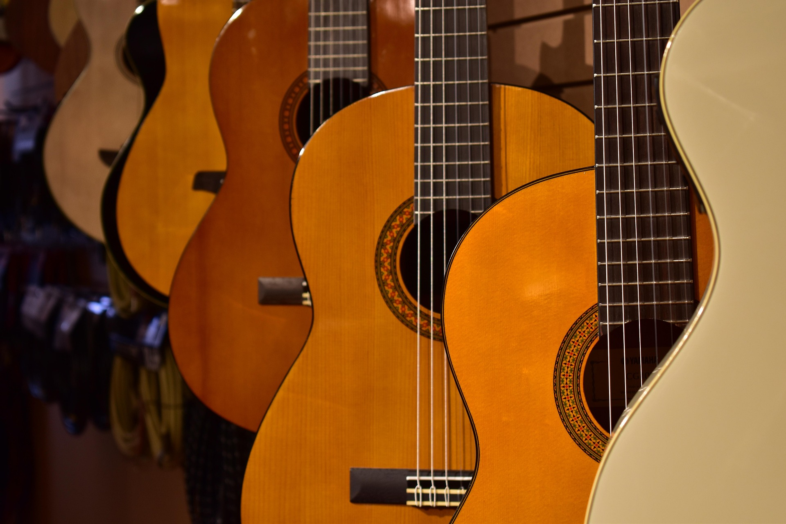
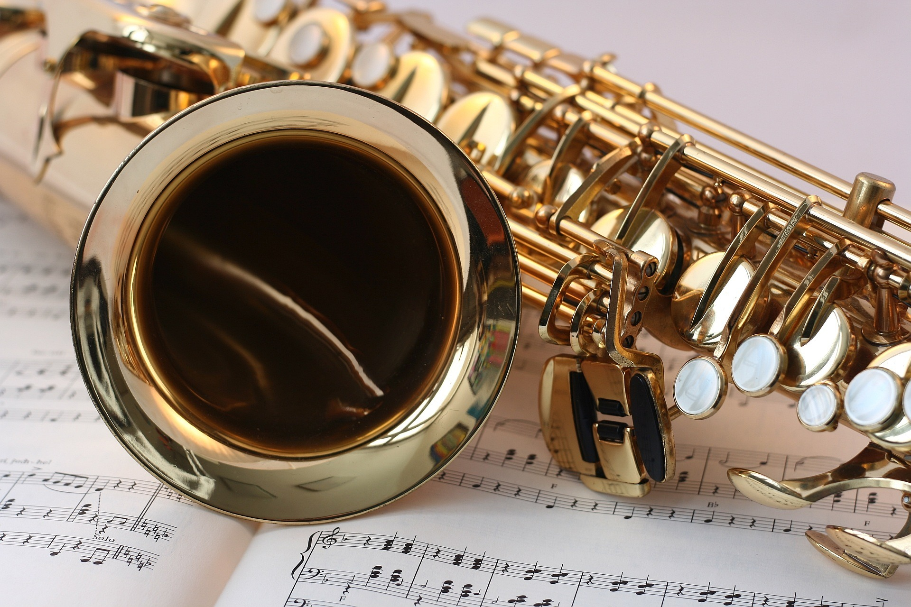
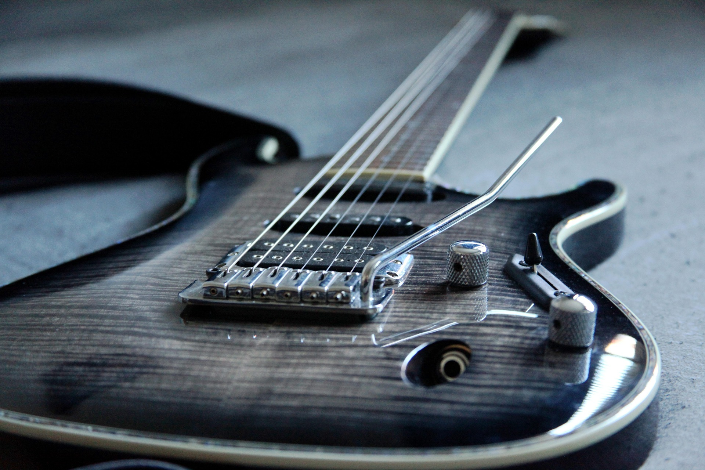

Temos orgulho do nosso trabalho, e isso se reflete em cada instrumento que oferecemos. Toda vez que você entra em nossa loja, garantimos uma experiência que vai além da compra — é um encontro com a música. Seja uma guitarra de timbre marcante, um teclado cheio de possibilidades, ou um simples violão que acompanha suas primeiras notas, cada peça é escolhida com cuidado e paixão. Aqui, qualidade e emoção caminham juntas, porque acreditamos que a música merece o melhor som.


Aqui você encontra instrumentos de todos os tipos — um verdadeiro universo musical reunido em um só lugar. Nossa loja nasceu da paixão pela música e do desejo de oferecer aos artistas, estudantes e amantes do som a oportunidade de encontrar o instrumento certo para cada momento.